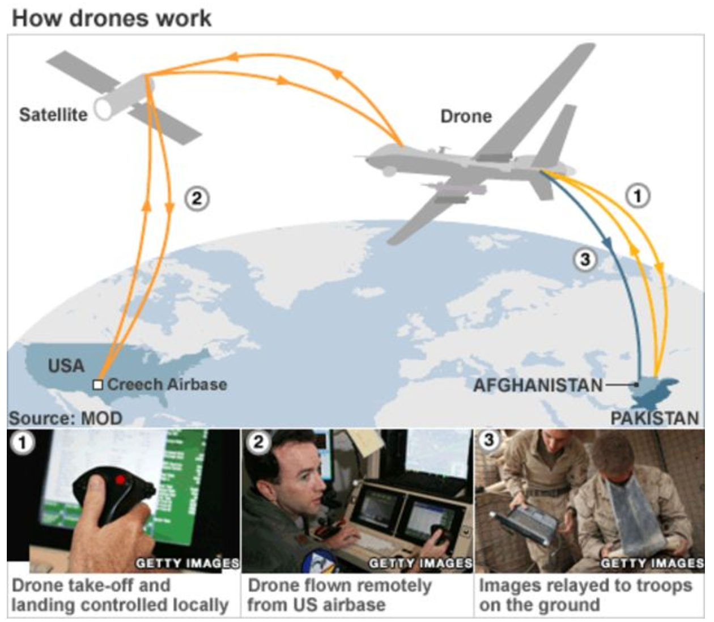
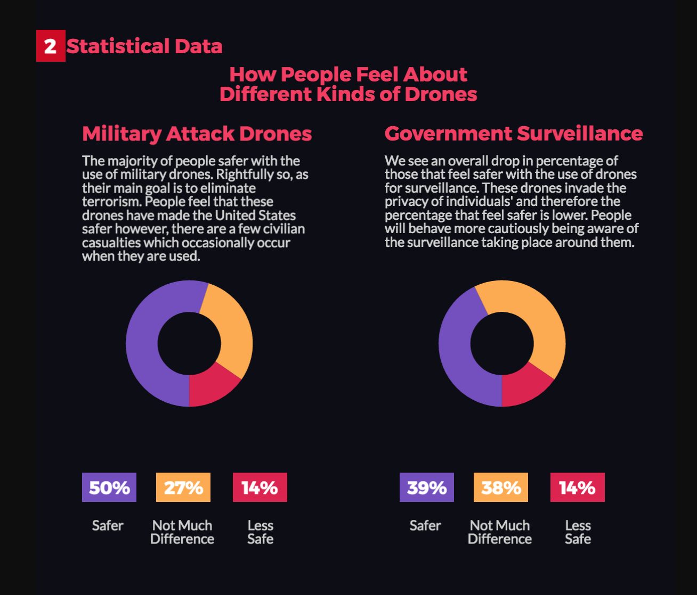

Information Technology and Informatics: Infographic Research Project
Drones and the Government Infographic
Drones, in a technological context, are best described as unmanned aircraft. Drones are more formally known as unmanned aerial vehicles (UAVs) or unmanned aircraft systems (UASes). They have many uses inclusing:
- Surveillance Purposes by the Government or any private investigators.
- Delivering Packages (Amazon)
- Search and Rescue Missions
- Photography and Mapping
Matt Groening on Drones
The scary thing about the future... there will be tiny cameras everywhere, and they'll be flying around like mosquitoes and drones. That will be bad. Drones are scary. You can't reason with a drone. - Matt Groening
Purpose of Governemnt Operated Drones
Technology is one industry that is always rapidly growing and changing. Drones are a relatively new technology, that have proven to cause issues with any individual’s privacy. As far as we are concerned drones serve two main purposes and they are to monitor or to attack. Attack Drones are useful for quick attacks where manned flight is considered too risky. While on the other hand Surveillance Drones are used for Intelligence, surveillance, reconnaissance missions.
How Drones Work

Target Audience
Seeing as Young Adults are the ones more likely to make use of technology I figured they would be the best to educate. Therefore the range for young adults is anywhere from teenage years to adulthood.
Statistics on Drones
